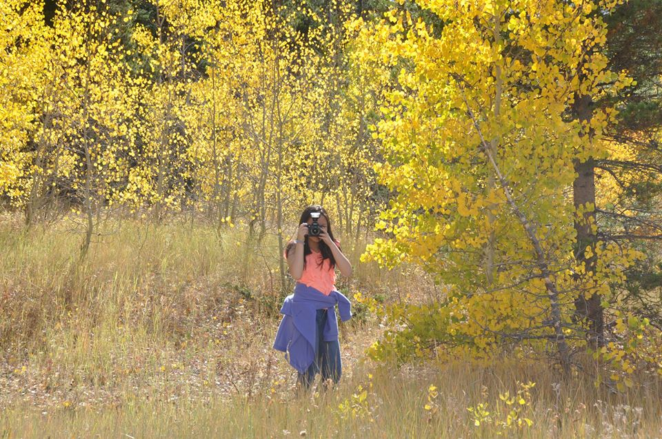

Amy's Site
Welcome to my AMYzing webpage. My name is Amy Nguyen and I'm a student at DSST College View High School.
I am a pianist, dancer, Aikidoka, and of course -- a huge nerd. Besides being a huge STEM nerd, you'll also find me enjoying my time on stage performing, acting, singing, playing the piano, or dancing. English is my second language and I'm a first generation Vietnamese American from my family!

Enjoy my short hair, braces, and cringe-worthy performance six years ago!
My Projects
Here are a few projects that I made in Computer Science class.
My Favorite Moments
Check out more about me!.